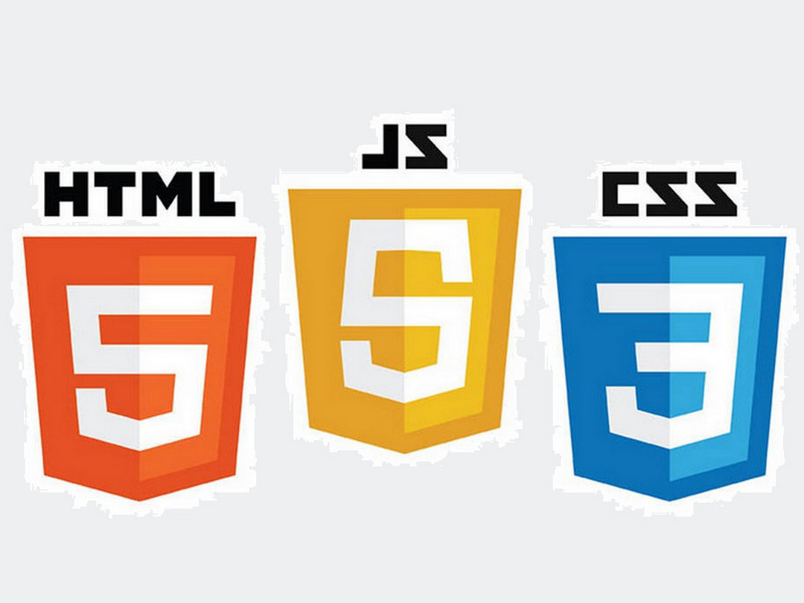
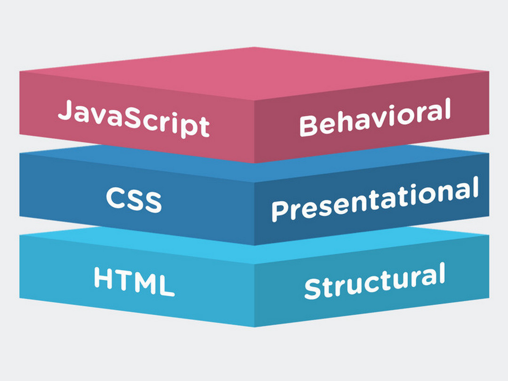
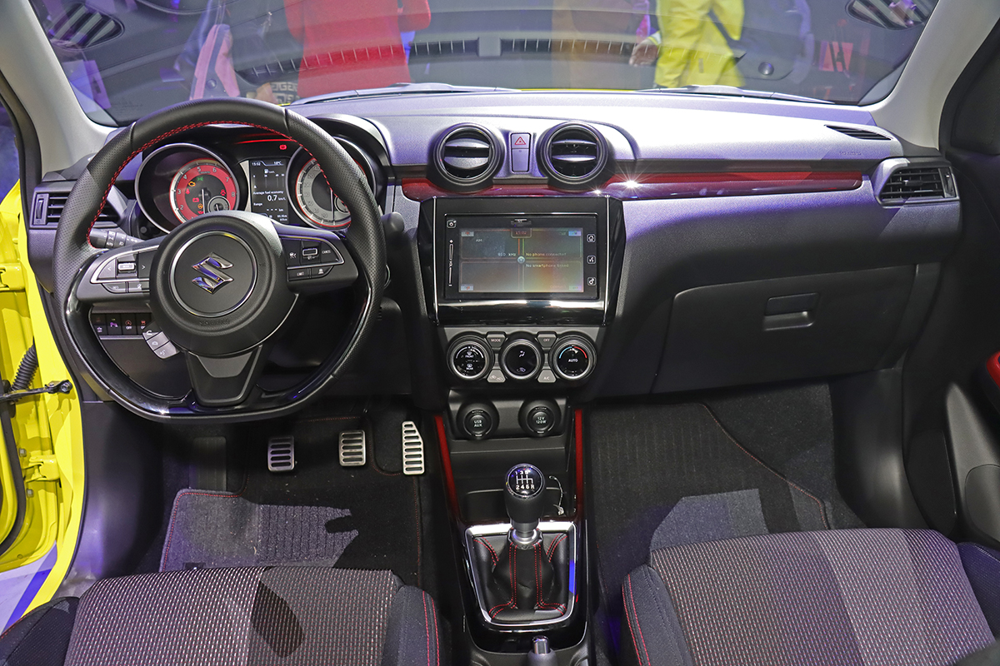
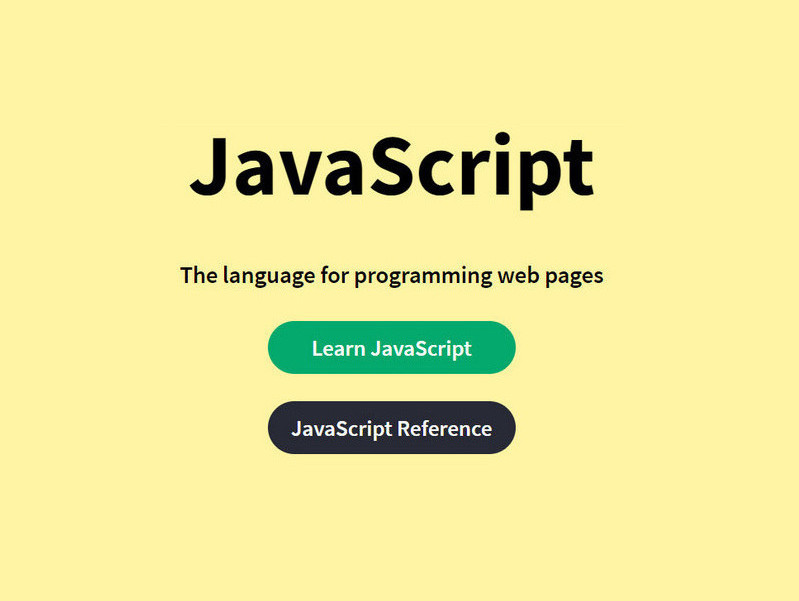
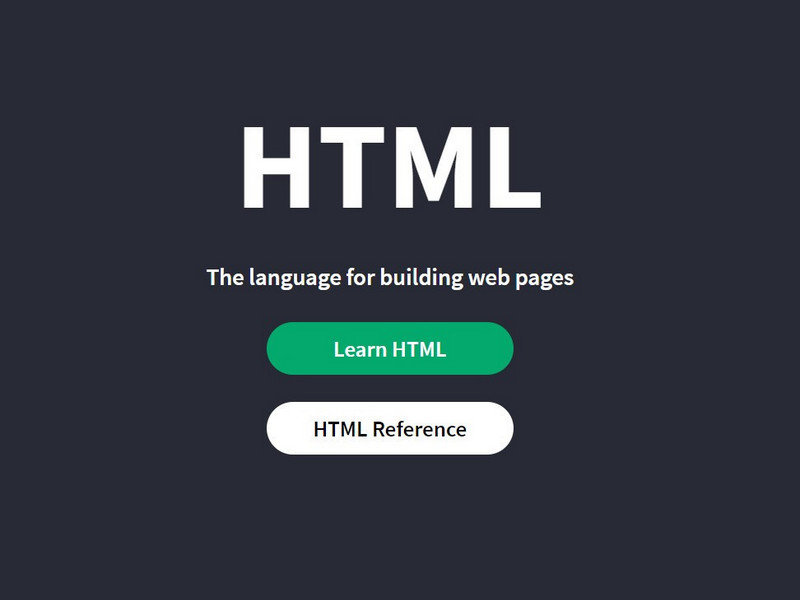
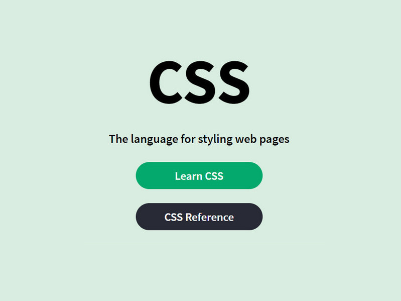

<!DOCTYPE html>
<html lang="en">
  <title>析空間 Xispace</title>
  <meta charset="UTF-8" />
  <meta name="viewport" content="width=device-width, initial-scale=1" />
  <link rel="stylesheet" href="https://www.w3schools.com/w3css/4/w3.css" />
  <link
    rel="stylesheet"
    href="https://cdnjs.cloudflare.com/ajax/libs/font-awesome/4.7.0/css/font-awesome.min.css"
  />
  <link
    rel="stylesheet"
    href="https://fonts.googleapis.com/css?family=Allerta+Stencil"
  />
  <style>
    .w3-allerta {
      font-family: "Allerta Stencil", sans-serif;
    }
    .mySlides {
      display: none;
    }
    .big {
      font-size: 20px;
      margin: auto;
    }
  </style>
  <body class="w3-monospace">

    <!-- Navbar -->
    <div class="w3-top">
      <div class="w3-bar w3-black w3-card">
        <a
          class="w3-bar-item w3-button w3-padding-large w3-hide-medium w3-hide-large w3-right"
          href="javascript:void(0)"
          onclick="myFunction()"
          title="Toggle Navigation Menu"
          ><i class="fa fa-bars"></i
        ></a>
        <a href="#" class="w3-bar-item w3-button w3-padding-large">HOME</a>
        <a
          href="#xisapce"
          class="w3-bar-item w3-button w3-padding-large w3-hide-small">析空間 Xispace</a>
        <a
          href="#contact"
          class="w3-bar-item w3-button w3-padding-large w3-hide-small">CONTACT</a>
        <a
          href="javascript:void(0)"
          class="w3-padding-large w3-hover-red w3-hide-small w3-right"
          ><i class="fa fa-search"></i></a>
      </div>
    </div>

    <!-- Navbar on small screens (remove the onclick attribute if you want the navbar to always show on top of the content when clicking on the links) -->
    <div id="navDemo"
      class="w3-bar-block w3-black w3-hide w3-hide-large w3-hide-medium w3-top"
      style="margin-top: 46px;">
      <a
        href="#xisapce"
        class="w3-bar-item w3-button w3-padding-large"
        onclick="myFunction()">析空間 Xispace</a>
      <a
        href="#contact"
        class="w3-bar-item w3-button w3-padding-large"
        onclick="myFunction()">CONTACT</a>    
    </div>

     <!-- Page content -->
    <div class="w3-content" style="max-width: 2000px; margin-top: 46px;">
      
      

      <!-- Automatic Slideshow Images -->
      <div class="mySlides w3-display-container w3-center">
        
        <div
          class="w3-display-bottommiddle w3-container w3-text-white w3-padding-32 w3-hide-small">
          <h3>HTML入門-網頁學習課程</h3>
          <p><b>在經過將近一個月的預售之後，Suzuki 也於今天聖誕節正式發表小改款的 Swift
            Hybrid/ Swift Sport Hybrid，其中前者外觀進行了小幅修飾、同時換裝了與
            ignis Hybrid</b></p>
        </div>
      </div>
      <div class="mySlides w3-display-container w3-center">
        
        <div
          class="w3-display-bottommiddle w3-container w3-text-white w3-padding-32 w3-hide-small"
        >
          <h3>Swift Hybrid</h3>
          <p><b>這次小改款的Swift
            針對水箱罩重新設計，使其看起來更加立體動感，外觀真的就只有小針美容，不說還真的看不出來。</b></p>
        </div>
      </div>
      <div class="mySlides w3-display-container w3-center">
        
        <div
          class="w3-display-bottommiddle w3-container w3-text-white w3-padding-32 w3-hide-small"
        >
          <h3>Swift Sport Hybrid</h3>
          <p><b>只有手排配置，因此這次「非手排不買」的熱血客群總算成真，Taiwan Suzuki
            就給你六速手排車型！</b></p>
        </div>
      </div>

      <!-- The One Section -->
      <div class="w3-container w3-content w3-center w3-padding-16"
        style="max-width: 1200px;"
        id="xisapce">
        <h2>小朋友們的程式學習課程</h2>
        <p class="w3-justify">
          <span class="big">以</span>
          互動式遊戲進行對小朋友的程式教學，沒有基礎也無仿，對電腦科學有興趣的小朋友們，都可以來體驗看看，我們對未來也規畫了不定期對做弱勢的或者徧鄉的族群們，能有免費的教學與旁聽的機會，以我們的力量回饋社會。這個商品，使用線上服務方式實施教學，適合對已經會基本電腦操作概念的學習對象。
        </p>
        <p class="w3-justify">
          <span class="big">我</span>
          們採用當今最熱門Node.js(nodejs)做為基底，Node.js採用Google開發的V8執行程式碼。由它來搭建小朋友們對程式的基礎，為什麼我們選用nodejs而不選擇Java或Python或者其它的語言呢？為什麼我們覺nodejs是最適合的呢？原因只有一個，那就是在以最小的編程資源的原則下，免去複雜的環境設定，我們讓小朋友們在線編程，在線運行，在線佈署，提高親合力，所以非它莫屬，我們也經過了分析一些特點，它不用安裝任何應用開發程序在自己的電腦中，以免在一開始接觸的時候，就因為電腦環境上的狀況百出，而失去了興趣然而產生不好的觀感。
        </p>
        <p class="w3-justify">
          <span class="big">當</span>
          然Java與Python它們比較屬於商業的高級應用，所以這是我們較不力推的，後兩者們更適合較高等學級的同學們來進行的。在2020年的stackoverflow對於程式語言的統計中nodejs是最受歡迎的語言，這個語言，適於前端，適於後端，適於資料庫，適於桌面，適於移動，適於硬體控制，都統統可以由nodejs來運行，雖然nodejs不是萬能，建立好的邏輯思考的開始，一切就由它入手吧。當然，這一切只是開始，開始小朋友們的邏輯運算，在他們的腦子裡建立起邏輯運算的概念，他們的未來是我們無法想像的廣大，啟發他的天賦，說不定他就是未來世界的偉大人才。
        </p>

        <h2>學習課程</h2>

        <div class="w3-row w3-row-padding">

          <div class="w3-third">
            <div class="w3-card-4">
              
              <div class="w3-container w3-wide">
                <h4></h4>
                <p></p>
              </div>
            </div>
          </div>

          <div class="w3-third">
            <div class="w3-card-4">
              
              <div class="w3-container w3-wide">
                <h4></h4>
                <p></p>
              </div>
            </div>
          </div>
          
          <div class="w3-third">
            <div class="w3-card-4">
              
              <div class="w3-container w3-wide">
                <h4></h4>
                <p></p>
              </div>
            </div>
          </div>
          
        </div>


      </div>
      

      <!-- The Contact Section -->
      <div
        class="w3-container w3-content w3-padding-64"
        style="max-width: 800px;"
        id="contact">
        <h2 class="w3-wide w3-center">CONTACT</h2>
        <p class="w3-opacity w3-center"><i>Fan? Drop a note!</i></p>
        <div class="w3-row w3-padding-32">
          <div class="w3-col m6 w3-large w3-margin-bottom">
            <i class="fa fa-map-marker" style="width: 30px;"></i> Chicago, US<br />
            <i class="fa fa-phone" style="width: 30px;"></i> Phone: +00
            151515<br />
            <i class="fa fa-envelope" style="width: 30px;"> </i> Email:
            mail@mail.com<br />
          </div>
          <div class="w3-col m6">
            <form action="/action_page.php" target="_blank">
              <div class="w3-row-padding" style="margin: 0 -16px 8px -16px;">
                <div class="w3-half">
                  <input
                    class="w3-input w3-border"
                    type="text"
                    placeholder="Name"
                    required name="Name"/>
                </div>
                <div class="w3-half">
                  <input
                    class="w3-input w3-border"
                    type="text"
                    placeholder="Email"
                    required
                    name="Email"/>
                </div>
              </div>
              <input
                class="w3-input w3-border"
                type="text"
                placeholder="Message"
                required
                name="Message"/>
              <button
                class="w3-button w3-black w3-section w3-right"
                type="submit">
                SEND
              </button>
            </form>
          </div>
        </div>
      </div>
      
    </div>

    <footer class="w3-container w3-black">
      <p class="w3-center w3-small w3-allerta">
        Copyright © 2021 Xispace. All rights reserved.
      </p>
    </footer>

    <script>
      // Automatic Slideshow - change image every 4 seconds
      var myIndex = 0;
      carousel();

      function carousel() {
        var i;
        var x = document.getElementsByClassName("mySlides");
        for (i = 0; i < x.length; i++) {
          x[i].style.display = "none";  
        }
        myIndex++;
        if (myIndex > x.length) {myIndex = 1}    
        x[myIndex-1].style.display = "block";  
        setTimeout(carousel, 5000);    
      }


      // Used to toggle the menu on small screens when clicking on the menu button
      function myFunction() {
        var x = document.getElementById("navDemo");
        if (x.className.indexOf("w3-show") == -1) {
          x.className += " w3-show";
        } else {
          x.className = x.className.replace(" w3-show", "");
        }
      }

    </script>
  </body>
</html>
